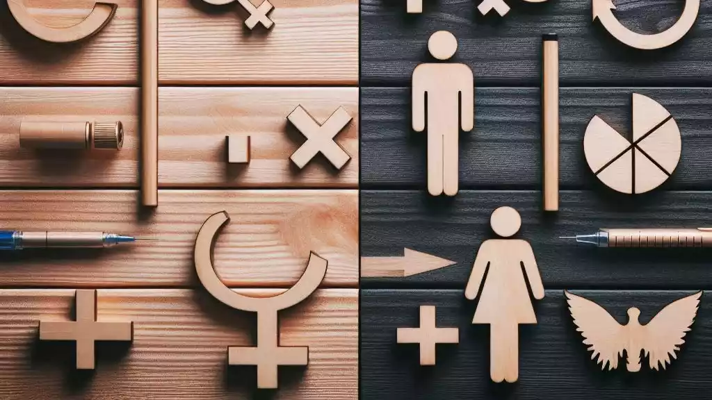
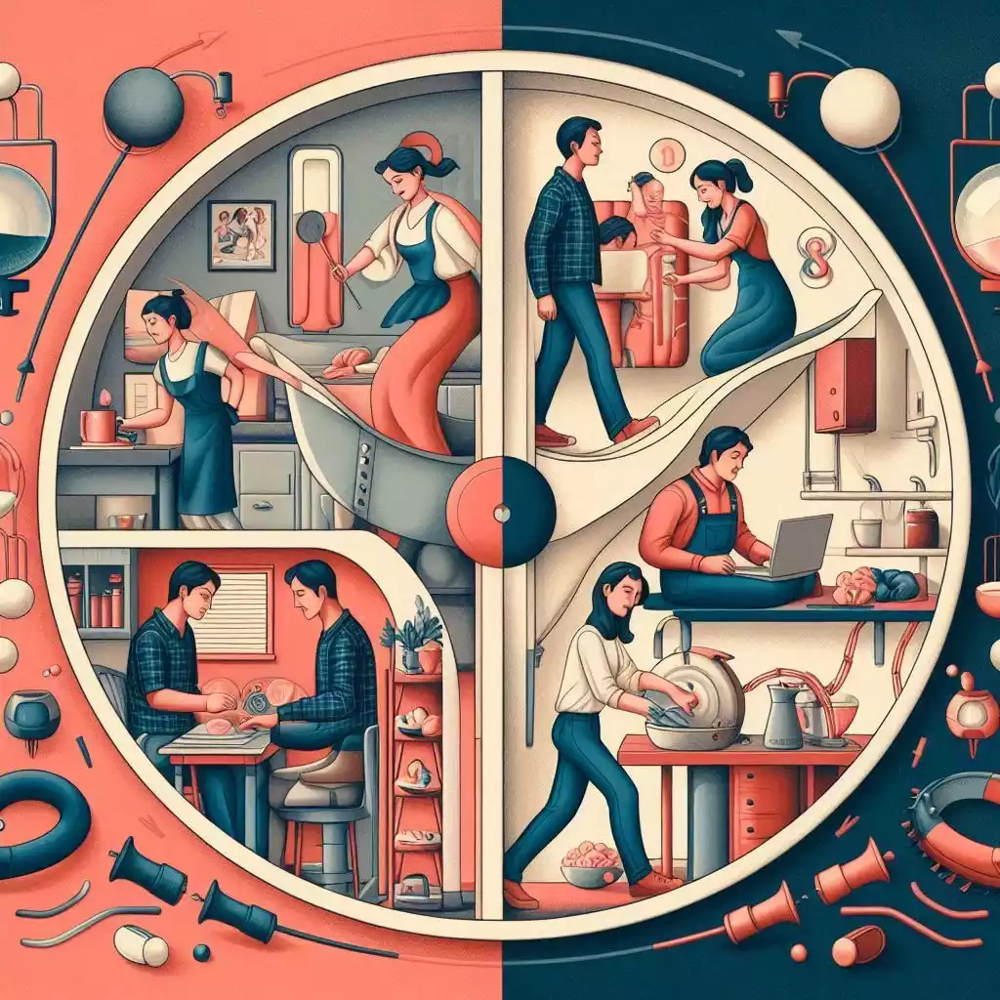
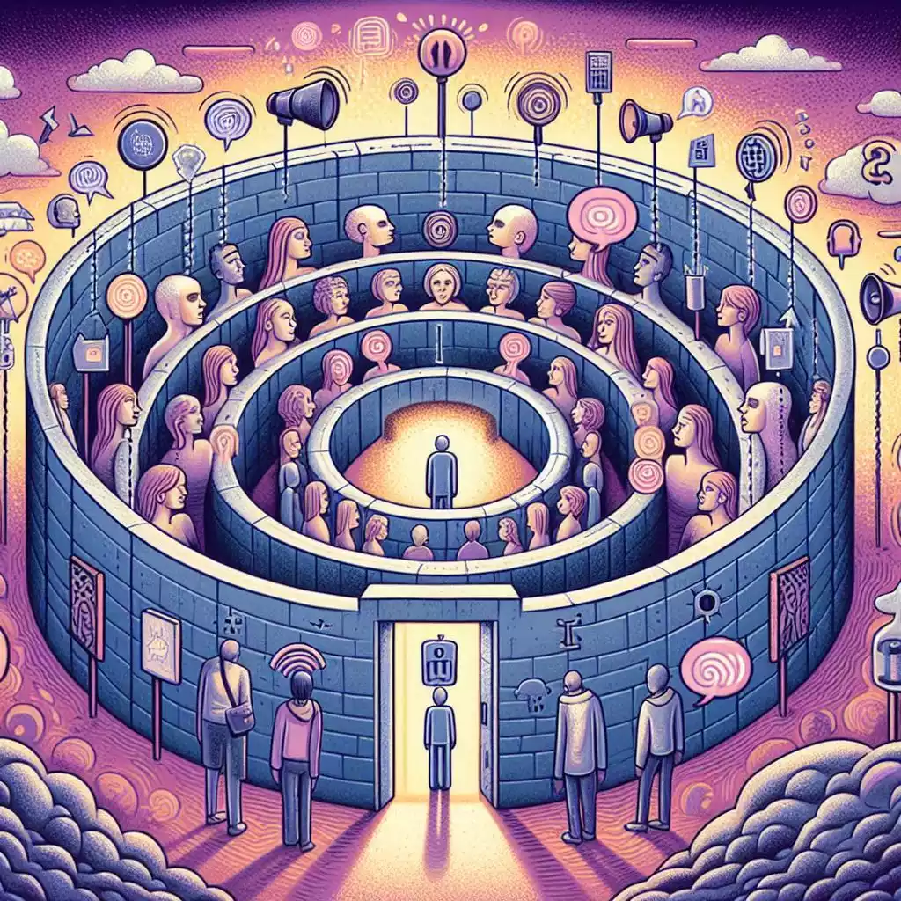

前言
又一次，性别对立的议题出现在热搜。这不是第一次，也绝不会是最后一次。
在搜索 #杨笠 京东# 之前，我们不妨回过头看看，上一次火爆全网的“胖猫事件”，能给我们带来什么启发。
如果大数据将这篇文章推向了你，那想必你已具备一定的独立思考能力。
观点性表述已加粗，抛砖引玉，感谢你能读完全文，也盼能在留言区得你高见！

谁也没想到，一名男子的去世竟能掀起网络舆论场的轩然大波。
5月3日，#胖猫谭竹#上了全网热搜。游戏代练“胖猫”是一名21岁的男生。他和28岁女生谭某网恋两年间，曾为谭某去重庆奔现，为她省吃俭用，并转账51万多。4月11日凌晨，胖猫在女友提出分手后在重庆跳江自杀。胖猫去世后，其姐姐刘某在网络上曝光弟弟与谭某的聊天转账记录，一时间争议四起。5月19日，重庆警方发布胖猫事件调查通报，通报称，“胖猫”与谭某存在真实的恋爱关系，谭某并未以恋爱为名骗取“胖猫”财物，不构成欺骗犯罪；此外，经警方调查，“胖猫”姐姐刘某故意在互联网发布相关隐私信息以博取网友同情。这段因刘某引发的网络舆论闹剧最终以警方的通报“尘埃落定”，就此收局。
伊始：世界已然撕裂
一石激起千层浪。“胖猫事件”一经发酵，在警方通报尚未出炉之际，便已在互联网掀起轩然大波，其暗含的性别对立之象亦愈演愈烈。
在贴吧、知乎、酷安等男性用户居多的平台，评论大多站在“胖猫”（男性受害者）视角，心疼在恋爱中无条件付出的一方，并由此引申出男性在恋爱中“类似的”“被女方逼入绝境的”“普遍遭遇”，激起对女方甚至女性群体的讨伐。更有相当一部分人，在胖猫跳江的位置堆放外卖、鲜花等祭品，借此控诉胖猫所代表的“男性的弱势地位”，煽动起一场感动式狂欢。
而在以女性用户为主的小红书（年轻用户居多）、微博等平台，评论则几乎一边倒地认为，作为男性的胖猫死后能获得全网关注并控制公共资源，相比之下，女性受害者往往被人们忽视，“女性受害的案件比比皆是，但女性受害的新闻算不得新闻”，权益赤字意味着女性永远处于弱势地位。此外，还有一些留言表达了对男生“以死明志”的鄙视和恐惧。
上述两类大相径庭的观点，恰似分处于两个泾渭分明的撕裂世界，彼此势同水火、难以相容。但饶有趣味的是，这两种观点竟皆发端于同一信息源。可见，虽然针对的主体别无二致，但不同的侧重点与叙述方式，也能巧妙地将其塑造成对自身最为有利的面貌。
反转：一场被精心策划的互联网闹剧
在当今信息爆炸的时代，社交媒体使得人人都可以轻易发布未经查证的消息，令真相比以往更难以获得，很多人形容社会进入“后真相”时代。很多时候，随着报道的不断深入，事实被更加客观全面地呈现在受众面前，受众立场随之急剧逆转，并表现出与之前截然相反的态度。
“胖猫”事件中，在警方发布通报之前，广大网友仅凭胖猫姐姐的发声和相关截图，便认定谭某为“网恋中的诈骗者”，对谭某展开语言攻击等网络暴力行为。在通报发布之后，网友们方才惊觉此前的草率与冲动。
在精心策划下，利益方推动事件舆论朝着他们预期的方向发展，为大众构建起一个回声室，隔绝其他声音。大众由此变成了被流量裹挟的被动跟随者，沦为流量的附庸，在这个回声室里配合上演一出闹剧，被利用了却仍不自知。
困局：回声室效应下的性别对立
从事件伊始到反转，无论是男性用户还是女性用户，皆身处相对同质化的封闭环境中，讨论单一来源的信息，分享相同的观点。大数据算法和利益方将用户困于无形囹圄之中，让用户鲜有机会接触到与自己（或利益方）立场相悖的观点，把一些意见相近的声音当成主流观点，误以为自己所获知的便是事实的全貌。这便是回声室效应（Echo Chamber Situation）。
在“胖猫事件”中，男性用户聚焦于胖猫的倾心付出和悲剧结局，还有他们所认定的不公平待遇；女性用户则将关注点置于女性受害者长久以来被忽视的社会现象。不同性别的用户一旦发声，便能在各自的圈层中收获无数应和之声。
“胖猫事件”还只是回声室效应的冰山一角。在其他诸多涉及性别对立的议题之上，回声室效应的踪迹如影随形，遍布于争议的每一个角落。

以就业领域为例，部分人认为女性在职场中受到严重的性别歧视。招聘时的性别限制、职业发展的瓶颈等问题使得女性在就业市场上举步维艰。女性用户在社交平台分享自己的求职遭遇，比如被问到是否打算结婚生子、因性别被拒绝晋升等情况。这些经历引起其他女性的强烈共鸣，进而强化了女性在职场处于弱势地位的观点，形成一个封闭的回声室。而男性用户可能觉得自己在工作中承担了更多压力和责任，漫长的工作时间、高强度的竞争以及家庭经济负担等让他们疲惫不堪。他们在自己的圈子里交流和抱怨，认为男性也很不容易，从而构筑起另一个回声室。双方身处各自的回声室中，难以听到对方的声音，致使性别对立在就业问题上日益加剧。
在家庭分工方面，传统观念中女性被赋予更多的家务和育儿责任，而男性则被期望在经济上承担更多。女性用户可能会抱怨自己在家庭中的付出没有得到足够的认可，觉得自己既要照顾家庭又要工作，压力巨大。她们在与其他女性的交流中，不断强调女性在家庭中的牺牲和不平等地位。而男性用户则可能认为，在家庭成立之初便要承受彩礼的负担，而后自己在外面辛苦工作，为家庭提供了经济支持，回到家却还要面对各种指责，感到委屈和不被理解。双方的争论，同样是回声室效应的表现，使得家庭分工问题上的性别对立难以缓解。

进阶：雄辩胜于事实
倘若说初级阶段的回声室效应尚能基于单一事实，那么其进阶状态则可谓 “抛开事实不谈”，诉诸情感与个人信念远比客观事实更重要——人们往往倾向于为了所坚持的立场去选择适宜的事实论据，而非依据事实来确定立场。更有甚者，言论全然无需事实支撑，仅仅是纯粹的情感宣泄。
心理学的“动机性推理”理论指出，人类太执着于自身立场时，往往会投入额外的认知资源来驳斥相反观点的证据，以让自己更确定自己的信念。这让人们立场先行，把情感和感觉放在首位，证据、事实和真相沦为次要。如此，偏见也能换取共鸣与支持。持不同立场者在各自的回声室内不断加强自己的理据，不断积累情绪，最终致使各方撕裂愈来愈大。
手机应用商店，一款名为Hertown的应用下载量与日俱增。这款应用强制用户实名认证，只允许女性注册登录。女性用户在该平台上探讨女性生理健康问题属于合理现象，然而，在一个没有男性的环境讨论两性关系及两性问题，岂不是荒谬至极？
Hertown绝不是个例。百度贴吧、豆瓣小组、虎扑板块、微博超话……与快手、抖音等不同，这些回声室并非由算法推送造成，而是用户主动搜寻加入的，因而事实更匮乏，论点更偏激。当偏激的观点得到认可，失智的认可又反哺于更暴戾的观点，最终形成对异性的肆意侮辱和人身攻击，着实令人侧目，且已然逼近法律边缘。
破局：走出回声室
对立的撕裂社会里没有受益者。笔者以为，要弥合对立，双方需走出回声室，在此过程中，有三点值得需着重指出。
第一，平权行动并不是一场零和博弈（Zero-sum Game），一方的收益绝不等同于另一方的损失，女性平权不会剥削男性权益（如高铁列车上增售卫生巾）。相反，女性平权对男性和女性都具有积极的意义。
个人层面上，男性可以摆脱传统束缚，不必再承受“必须坚强”、“要成为家庭的经济支柱”等负担和心理压力，且在平等的关系中，男性能与女性建立更深入的沟通和更美好的关系；家庭层面上，平权运动促使家庭责任重新分配，夫妻双方可以共同协商、共同决策；社会层面上，女性领导的加入能为决策提供更多元的视角和更广泛的利益覆盖面，营造更加和谐、包容的社会环境。
第二，笔者呼吁多维度看待社会现象和社会问题，避免陷入“二极管思维”的窠臼。当“女（男）权”成了“女（男）拳”，当他们套上了神圣的光环、追求自己所相信的普世价值之时，是否也该去理解这些不同的声音，而不是只认为自己一定对，无视反对者？毕竟，现实世界不是非黑即白，而是多彩的融合。

一个典型的案例是，如今在招聘时，有部分高劳动强度的岗位将女性排除在外。一方面，此举无疑限制了女性的发展机会，是一种不公平的歧视行为；可另一方面，考虑到女性的客观生理特点，让女性免于苛刻工作条件、承担过高安全风险，不招聘女性又是一种对女性的保护（事实上，《女职工劳动保护特别规定》列示了女职工禁忌从事的劳动范围）。还有观点认为，保护女性并不意味着要将她们从这类岗位中排除，而应改善工作环境、提供劳动保护，确保女性在高劳动强度岗位上的安全健康。在笔者看来，与诸多其他类似情形相同，这类情况难以简单地一概而论，反倒是一个值得探讨的辩题。
第三，不要着急贴标签——洞悉群体的多样性至关重要。当我们脱口而出“所有的男（女）性都是……”的时候，是否有想过，也许只是与我们有过交集的个体有这些特性，而他（她）们不能代表整体？无论是蝈蝻、普信男、金针菇，还是绿茶婊、田园女、白莲花……这些标签以污名化的方式强行制造对立，断绝了理性沟通的可能性。它们不能帮助你走出回声室、理解这个复杂世界，也不能帮助你理解屏幕背后那些活生生的人。
结语：打破效应，弥合对立
不同性别的个体，各自都秉持着自身的立场与经验，身处不同的认知岛屿。胖猫留给我们的，除了茶余饭后的谈资，还有如何打破回声室效应、跨越偏见与误解、弥合性别对立的问题。


发表您的看法